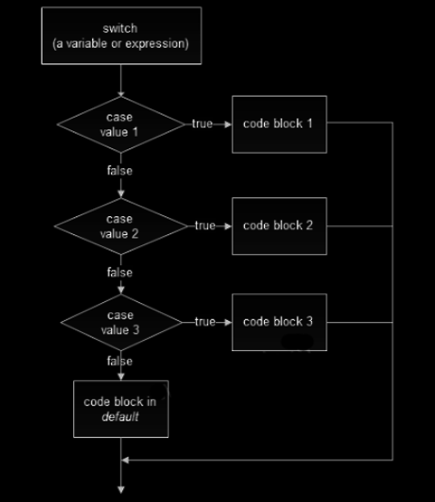

Introduction to C
Programming
Press Spacebar for next slide
Esc or 'o' for overview
What’s programming?
Programming is a way to instruct the computer to perform various tasks
LANGUAGES
| How normal people see it | How Geeks see it |
|---|---|
| Hindi | Python |
| English | C++ |
| Spanish | Java |
| Tamil | Ruby |
(press SPACE to navigate down)
The C language was developed & released in the
year 1972 by
Dennis Ritchie
He also helped in developing UNIX.
The latest version of C is C18
because
it was
Published in 2018
Stuff developed using C
(with the help of C++)
- LINUX OS
- macOS
- Python
- JAVA
- MySQL
- and much more...
FIRST CODE OF EVERY GEEK
#include<stdio.h>
int main()
{
printf("Hello World!");
return 0;
}
When your code outputs
“Hello World!”
IMPORTANT
‘Never forget the’
;
DataTypes in C
| Char |
|---|
| takes in character like alphabets |
| int |
|---|
| takes in Integer values |
| Float |
|---|
| stores decimal number with single precision |
| Double |
|---|
| stores decimal number with double precision |
Basic syntaxes
Printing:
printf(“format specifier”, variable_name);
Scanning:
scanf(“format specifier”, variable_address);
| Format Specifier | Datatype |
|---|---|
| %c | Character |
| %f | Float++ |
| %d | Integer |
Operators
| Unary | + - ! ~ ++ -- (type) * & sizeof | Right to Left |
| Multiplicative | * / % | Left to Right |
| Additive | + - | Left to Right |
| Shift | << >> | Left to Right |
| Relational | < <= > >= | Left to Right |
| Equity | == != | Left to Right |
| Bitwise AND | & | Left to Right |
| Bitwise XOR | ^ | Left to Right |
Table Continued...
| Bitwise OR | | | Left to Right |
| Logical AND | && | Left to Right |
| Logical OR | || | Left to Right |
| Conditional | ? : | Right to Left |
Decision Making Structures
Condition block need to be executed or not is decided by the condition.
If the condition is "true" statement block will be executed, if condition is "false" then statement block will not be executed.
Decision Making Statements in C
- if statements
- if...else statements
- switch case statements
If Statements
If (condition 1 )
{
Executed if condition is true
}
Flow Chart for If statement
IF …. Else
if (condition)
{
Executes this block if condition is true
}
else
{
Executes this block if condition is false
}
Flow chart for If Else statement
Switch Case
Switch (n) {
case 1 :
Executed when n = 1
break;
case 2:
Executed when n = 2
break;
default :
Executed when none of the cases are true
Flow chart for Switch Case statement
Loop
Loops in programming comes into use when we need to repeatedly execute a block of statements.
Until the statement turns False.
Looping Statements
- for Loop
- while Loop
- do while
For loop
for ( initialisation ; termination condition ; upgradation)
{
body of Loop
}
FLOW OF THE FOR LOOP
While loop
initialise loop counter;
while( test loop counter using a condition )
{
Do this;
And this;
Update loop counter;
}
Do While
do
{
this;
and this;
and this;
}
while(this condition is true);
Note: This loop executes for at least once irrespective of the test condition due to the “do” block.
FLOW OF THE WHILE AND DO WHILE LOOP
Want to try it out?
- Print natural numbers from 1 to n.
- Print all odd numbers between any two numbers.
- Print the multiplication table of any number.
- Calculate the product of the first ten natural numbers.
Congratulations !! You are getting better at this
Moving on to some
ADVANCED
topics
ARRAY
Collection of items of the same datatype stored at contiguous memory locations
- {1, 7, 3, 0, 2}
- {‘G’, ‘E’, ‘E’, ‘K’}
- {‘this’, ‘is’, ‘an’, ‘array’}
ARRAY DECLARATION
In C, we can declare an array by specifying its type and size or by initializing it or by both.
BUT HOW?
- int arr[10]; (just the declaration)
- int arr[] = {10, 20, 30, 40} (declaration as well as initialization without specifying size)
- int arr[6] = {10, 20, 30, 40} (declaration, initialization as well as the size is also specified)
Very Important!!!
Array indices starts at zero and go to one less than the size of the array
Example : int arr[10] = {10, 20, 30, 40, 50, 60, 70, 80, 90}
POINTERS
It is a VARIABLE
which holds
address of another variable of same data type
To use pointers in C, we must understand these two “unary” operators
THE '&' OPERATOR <--access Memory from Variable
THE '*' OPERATOR <--access Variable from Memory
void main(){
int var = 10, *ptr;
ptr = &var;
printf("%d\n", var);
printf("%p\n", ptr);
printf("%d\n", *ptr);
}
10
0x7fff84ef7e7c
10
Phew, that was a lot to take in but you did it.
Functions
A general breakdown of a function
Types of functions in C
Ways to pass the arguments
(In simplest words)
| Pass by Value | Pass by Reference |
|---|---|
| We pass variable as function arguments | We pass value address as function arguments |
| void swap(int x, int y) | void swap(int *x, int*y) |
Algorithms
Recursion
The process in which a function calls itself directly or indirectly
Let’s see how a Recursive Function works

Searching
Sorting
Data Structures
Stack
- Stack is a linear data structure.
- It follows a particular order in which the operations are performed.
- The order may be LIFO(Last In First Out) or FILO(First In Last Out).
Real World Example
- Piles of plate
- Heaps of book
- Submission of latest form
Operations of Stack
- Push: Adds an item in the stack.
- Pop: Removes an item from the stack.
- Peek or Top: Returns top element of stack.
- isEmpty: Returns true if stack is empty, else false.
Time Complexity of push (), pop(), peek (), isEmpty() the functions :O(1)
Queue
- It’s again a linear data Structure.
- It follows a particular order in which the operations are performed.
- The order is First In First Out (FIFO).
Real World Example
- Queue of people
- Reservation of Tickets
- When data is transferred from sender to receiver end, queue is used so that data received in the same form as it is send.
Operations of Queue
- Enqueue: Adds an item to the queue.
- Dequeue: Removes an item from the queue.
- Front: Points to the first item of the queue.
- Rear: Points to the last item of the queue.
Time Complexity enqueue(), dequeue(), isFull(), isEmpty(), front() and rear() is O(1).